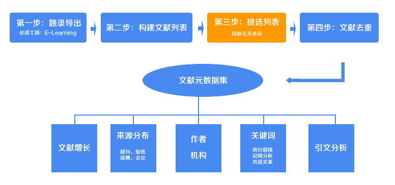
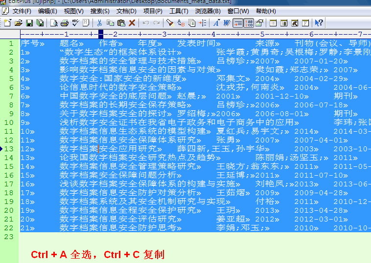
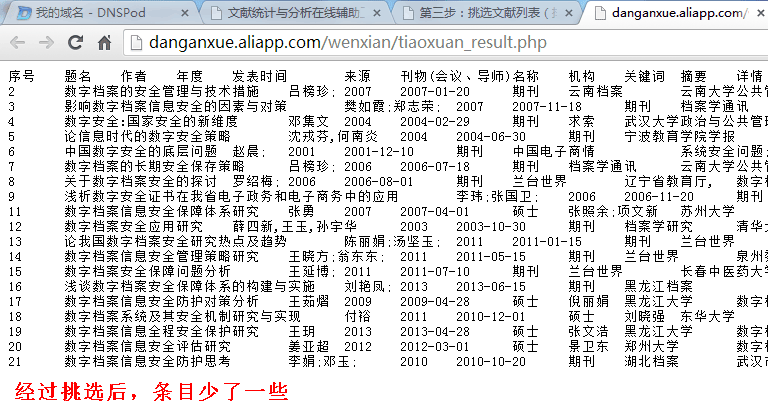
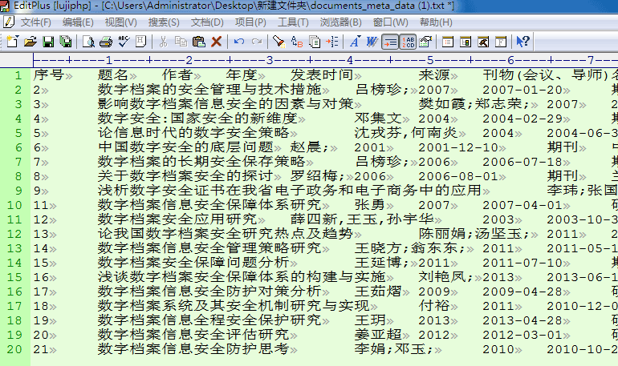

第三步：挑选文献列表（排除无关条目）

在上一步中，你已经获得了一个包含了初始数据的txt文件（如果是直接下载的话，它的名字为documents_meta_data.txt），接下来，你将使用本步骤的工具排除那些由于你没有注意而保留下来的无关条目。经过挑选之后，保留下来的文献条目将全部与你要研究的问题相关。下面按照提示进行操作吧。
打开上述的txt文件，你看到的是经过上一步处理好的条目格式（如下图），通过键盘上的“Ctrl+A”全选所有内容，“Ctrl+C”拷贝它，然后黏贴到下面的文本框中。

复制好了吗？把复制好的内容黏贴到下面的文本框中。黏贴的时候如果你的内容极其多，很有可能出现浏览器假死的现象，所以稍微等一下（推荐使用firefox、chrome等浏览器，不推荐IE浏览器）。不要急着点提交按钮，继续往下看。
如何填写A项：你把鼠标放在A文本框上的时候可以看到提示，里面要填写文献标题和摘要中包含的字词，例如你可以填写“档案馆,数字,虚拟”来确保文献是和数字档案馆相关的，需要注意的是，不同的关键词之间用英文逗号“,”分隔。
如何选择B项：如果你选择了且的关系，那么文献的标题或摘要中就必须包含“档案馆”“数字”“虚拟”这三个词，如果缺少其中一个，就会被排除；如果你选择了或的关系，那么文献的标题或摘要中只需要包含这三个词中的一个，就可以被保留下来，只有那些都不包含的条目才会被排除。
如果填写C项：从前面说到的txt文档中全选、复制，黏贴到C处文本框即可。
如果又有且又有或怎么办？例如必须包含“档案馆”和“信息”这两个词，同时只需要包含“数字”和“虚拟”这两个词中的一个就可以了。这种情况下，先使用且的关系把包含了“档案馆”和“信息”这两个词的条目挑选出来，得到一个txt文档，再把这个文档的内容全部拷贝到上面的文本框，把关键词改为“数字;虚拟”，选择或的关系，再提交即可。
勾选“直接下载txt结果”前的选项的话，点击提交后会直接提示下载一个txt文档，如果不勾选，提交后会把处理好的数据直接显示在网页中。
这里推荐勾选，因为即使你不勾选，后面也要把结果数据先拷贝到一个txt文件中。（为什么不直接下载excel文档呢？因为不同的服务器处理后文件格式不一样，excel下载以后可能出现乱码，因此使用txt比较保险。况且，我们下一步中还要使用这个txt。）
不勾选“直接下载txt”的情况下（勾选了的不必要看这一段），点击提交，会打开显示了处理结果数据的网页。再次使用“Ctrl+A => Ctrl+C”拷贝整个网页的内容。在你的电脑桌面新建一个.txt文档，打开后把拷贝的内容黏贴在里面。
如果勾选了下载txt的选项，那么会下载一个documents_meta_data.txt，里面保存了经过处理的数据。将它打开，你可以看到每行一条文献，第一列是序号。没错，这就是我们处理过后的一个标准格式，（如下图）这个txt文件我们会在下一步用到，把它放在方便的位置。


通过上面的这几个步骤，你就拿到了我们需要的txt文档，把这个文档保存到方便使用的位置，我们将会在下一步中使用它。